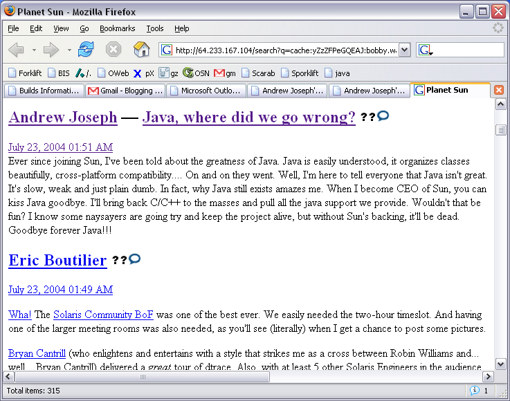

Once upon a time, as evident by the above screenshot, Andrew used to hate Java. However, we’ve discovered that he has since done a full 180 on this particular programming language and it is now his favorite. “I remember when people used to call me Java Joseph and I used to hate it. Now, it makes me all warm and fuzzy inside. I love not having pointers and having garbage collection and I bet Java’s faster than C/C++!” comments a very excited Andrew.
Andrew has gone on record saying “I used to hate programming in Java, but then I realized that I was just fooling myself and I actually loved it. I went back to school and took CS307 and CS315 four times over and over again because I just couldn’t get enough of those binary trees in Java. I see null pointer exceptions and now I nearly wet my pants in excitement because I get to debug Java code!”
A Sun employee remarked “Andrew Joseph is an example for us all. We are currently in talks with Andrew about being our Java mascot for our next PR compaign. It’s pretty exciting working with such a high profile born-again Java coder.” Sun’s new campaign is expected to launch in the first quarter of 2007.
For Christmas this year, Andrew plans on getting his four children Java Virtual Machines rather than the requested Micro Machines. “If they don’t like it now, they’ll learn to love it like I did” says Andrew.
Java can be downloaded from Sun Microsystems.
Dirty lies, I stand by my sun blog comments.
comment by Andrew — October 16, 2006 @ 10:12 am
Two more minutes.
comment by R. Lopez — October 16, 2006 @ 4:24 pm
lol, I forgot about that guy!
comment by Oliver — October 16, 2006 @ 4:25 pm